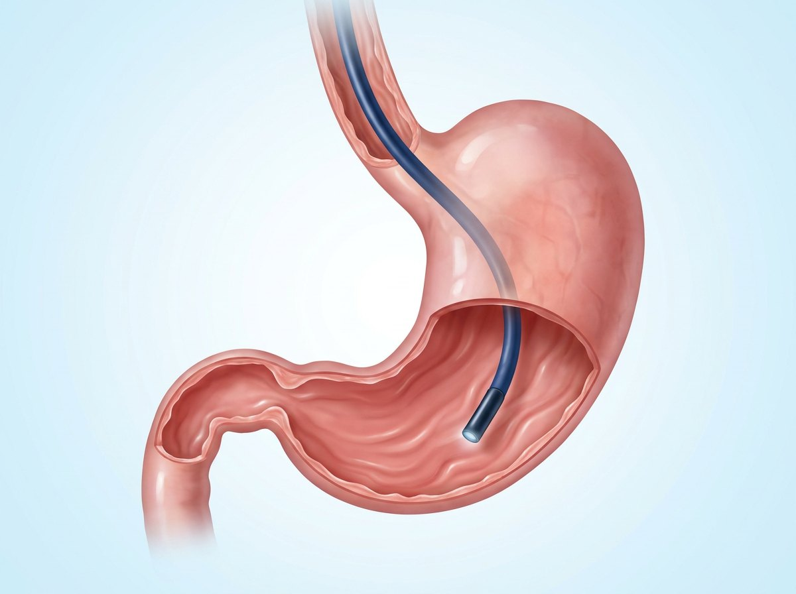

검사 당일부터 다음 날까지
검사 당일부터 다음 날까지

| 언제 | 이렇게 하세요 | 이건 피하세요 |
|---|---|---|
| 검사 직후 30분~1시간 | 수면에서 완전히 깰 때까지 쉬고, 보호자와 함께 귀가합니다. | 검사 후 24시간 운전·기계 조작·중요한 결정 |
| 1~2시간 뒤 | 물을 한 모금씩 마셔 보고, 사레가 없으면 미음·죽·연두부부터 드세요. | 목 마취가 풀리기 전 음식 |
| 당일 저녁 | 평소 양의 2/3 정도만 천천히 드세요. | 맵고 뜨거운 음식·술·카페인 |
| 다음 날부터 | 평소 식사·운동·사우나·여행 모두 괜찮습니다. | — |
 흔한 불편과 위험 신호
흔한 불편과 위험 신호
| 대부분 저절로 좋아집니다 | |
|---|---|
|
|
 약 · 결과 · 다음 검사
약 · 결과 · 다음 검사
| 평소 먹던 약 | 식사를 다시 시작한 뒤 평소대로 드세요. 조직검사를 하지 않아 따로 제한은 없습니다. |
|---|---|
| 피를 묽게 하는 약 | 아스피린·클로피도그렐(플라빅스)·와파린·리바록사반(자렐토) 등은 진료실에서 들은 날짜에 다시 드세요(보통 바로 다시 먹습니다). 헷갈리면 전화로 확인하세요. |
| 당뇨약·인슐린 | 식사량이 돌아올 때까지 저혈당에 주의하고, 필요하면 상의하세요. |
| 결과 안내 | 내시경 소견은 당일~며칠 안에 진료실 또는 문자로 알려 드립니다. 연락을 못 받으셨으면 전화 주세요. |
| 정상이면 보통 1~2년 뒤입니다. 가족력·위염·역류·헬리코박터 양성 등이 있으면 간격이 더 짧아질 수 있습니다. |
진료시간에는 광교바른내과 ☏ 031-893-4560 으로도 연락하세요. ·  조직검사나 헬리코박터 신속검사를 하셨다면 → 위내시경 후 주의사항 (조직검사 있음)
조직검사나 헬리코박터 신속검사를 하셨다면 → 위내시경 후 주의사항 (조직검사 있음)